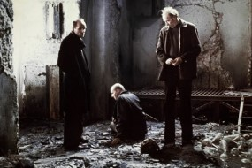

Главная проблема цитат в сети в том, что люди сразу верят в их подлинность.
— В.И. Ленин
Дарья Николаева
Любимые писатели:
Пелевин
Павич
Мураками
Сорокин
Любимые фильмы:
"Джокер"
"Джанго освобожденный"
"Сталкер"
"Собачье сердце"
Родилась в 1985 г. в Йошкар-Оле. Училась в лицее им. М.В. Ломоносова,
затем в 2002 г. поступила в МарГТУ на экономический факультет.
В настоящее время учусь в Институте программных систем.
Надо больше текста. Надо больше текста. Надо больше текста. Надо больше текста. Надо больше текста. Надо больше текста.
Мое хобби
В свободное время люблю читать книги, смотреть фильмы и сериалы. Из активного отдыха выбираю прогулки,
спорт (тренажерный зал, бассейн). Отпуск предпочитаю проводить за пределами родного города, чаще выбираю культурный туризм, чем пляжный отдых.
Готэм, начало 1980-х годов. Комик Артур Флек живет с больной матерью,
которая с детства учит его «ходить с улыбкой». Пытаясь нести в мир хорошее и дарить людям радость,
Артур сталкивается с человеческой жестокостью и постепенно приходит к выводу, что этот мир получит
от него не добрую улыбку, а ухмылку злодея Джокера.
Джанго освобожденный
Эксцентричный охотник за головами, также известный как Дантист, промышляет
отстрелом самых опасных преступников. Работенка пыльная, и без надежного помощника ему не обойтись.
Но как найти такого и желательно не очень дорогого? Освобождённый им раб по имени Джанго — прекрасная
кандидатура. Правда, у нового помощника свои мотивы — кое с чем надо сперва разобраться.

Сталкер
В некой запретной Зоне, по слухам, существует комната, где исполняются самые
заветные желания. К этой комнате отправляются модный Писатель и авторитетный Профессор — каждый по своим
причинам, о которых предпочитают не говорить. А ведет их туда Сталкер — проводник по Зоне — то ли юродивый,
то ли апостол новой веры.
Собачье сердце
Москва. 1924 год. В результате одного из своих сложнейших опытов, профессор
Преображенский делает потрясающее открытие: после пересадки гипофиза его подопытный пёс Шарик превращается в
человека! Сенсационная новость мгновенно разлетелась по Москве, и принесла всемирно известному профессору
очередную порцию признания. Однако радость его была недолгой: вопрос о том, что из Шарика — в последствии
гражданина Шарикова — может получиться «высокая психическая личность» очень быстро становится под сомнение.